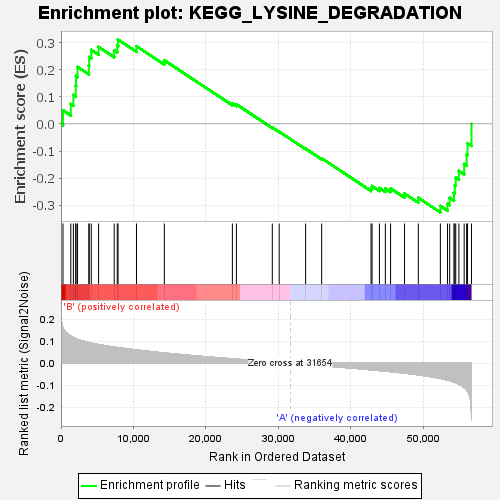
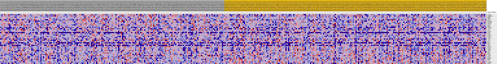
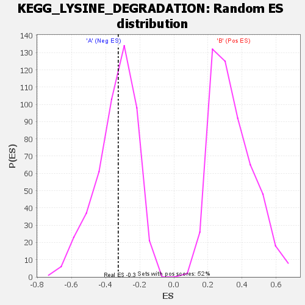

| | | Dataset | my.my.cls#B_versus_A.my.cls#B_versus_A_repos |
| Phenotype | my.cls#B_versus_A_repos |
| Upregulated in class | A |
| GeneSet | KEGG_LYSINE_DEGRADATION |
| Enrichment Score (ES) | -0.3260654 |
| Normalized Enrichment Score (NES) | -0.95386446 |
| Nominal p-value | 0.48140496 |
| FDR q-value | 0.5828502 |
| FWER p-Value | 0.999 |
Table: GSEA Results Summary

Fig 1: Enrichment plot: KEGG_LYSINE_DEGRADATION
Profile of the Running ES Score & Positions of GeneSet Members on the Rank Ordered List
| SYMBOL | TITLE | RANK IN GENE LIST | RANK METRIC SCORE | RUNNING ES | CORE ENRICHMENT | | 1 | SETDB2 | na | 273 | 0.159 | 0.0500 | Yes |
| 2 | AASDHPPT | na | 1352 | 0.122 | 0.0730 | Yes |
| 3 | EHMT2 | na | 1705 | 0.116 | 0.1067 | Yes |
| 4 | TMLHE | na | 2029 | 0.111 | 0.1393 | Yes |
| 5 | PLOD2 | na | 2070 | 0.111 | 0.1766 | Yes |
| 6 | SUV39H1 | na | 2280 | 0.108 | 0.2102 | Yes |
| 7 | SUV39H2 | na | 3846 | 0.094 | 0.2148 | Yes |
| 8 | SETMAR | na | 3883 | 0.093 | 0.2463 | Yes |
| 9 | PLOD1 | na | 4176 | 0.091 | 0.2725 | Yes |
| 10 | EHMT1 | na | 5184 | 0.085 | 0.2839 | Yes |
| 11 | ALDH1B1 | na | 7337 | 0.073 | 0.2711 | Yes |
| 12 | AADAT | na | 7754 | 0.071 | 0.2883 | Yes |
| 13 | ACAT1 | na | 7870 | 0.071 | 0.3106 | Yes |
| 14 | SETD1A | na | 10411 | 0.060 | 0.2864 | No |
| 15 | OGDHL | na | 14253 | 0.046 | 0.2345 | No |
| 16 | PLOD3 | na | 23639 | 0.020 | 0.0756 | No |
| 17 | ALDH7A1 | na | 24194 | 0.018 | 0.0721 | No |
| 18 | ECHS1 | na | 29146 | 0.006 | -0.0132 | No |
| 19 | ALDH3A2 | na | 30096 | 0.004 | -0.0287 | No |
| 20 | AASS | na | 33741 | -0.005 | -0.0914 | No |
| 21 | ACAT2 | na | 35957 | -0.011 | -0.1269 | No |
| 22 | NSD1 | na | 42765 | -0.029 | -0.2371 | No |
| 23 | PIPOX | na | 42905 | -0.030 | -0.2293 | No |
| 24 | SETD7 | na | 43923 | -0.033 | -0.2360 | No |
| 25 | BBOX1 | na | 44737 | -0.035 | -0.2382 | No |
| 26 | SETD1B | na | 45460 | -0.038 | -0.2380 | No |
| 27 | SETD2 | na | 47388 | -0.044 | -0.2567 | No |
| 28 | SETDB1 | na | 49287 | -0.052 | -0.2723 | No |
| 29 | ASH1L | na | 52328 | -0.068 | -0.3026 | No |
| 30 | GCDH | na | 53317 | -0.076 | -0.2940 | No |
| 31 | OGDH | na | 53614 | -0.078 | -0.2723 | No |
| 32 | HADHA | na | 54198 | -0.084 | -0.2535 | No |
| 33 | AASDH | na | 54323 | -0.086 | -0.2261 | No |
| 34 | DOT1L | na | 54451 | -0.088 | -0.1981 | No |
| 35 | EHHADH | na | 54885 | -0.094 | -0.1732 | No |
| 36 | HADH | na | 55613 | -0.110 | -0.1481 | No |
| 37 | DLST | na | 55953 | -0.121 | -0.1126 | No |
| 38 | ALDH9A1 | na | 56081 | -0.126 | -0.0713 | No |
| 39 | ALDH2 | na | 56619 | -0.235 | 0.0000 | No |
Table: GSEA details [plain text format]

Fig 2: KEGG_LYSINE_DEGRADATION
Blue-Pink O' Gram in the Space of the Analyzed GeneSet

Fig 3: KEGG_LYSINE_DEGRADATION: Random ES distribution
Gene set null distribution of ES for KEGG_LYSINE_DEGRADATION